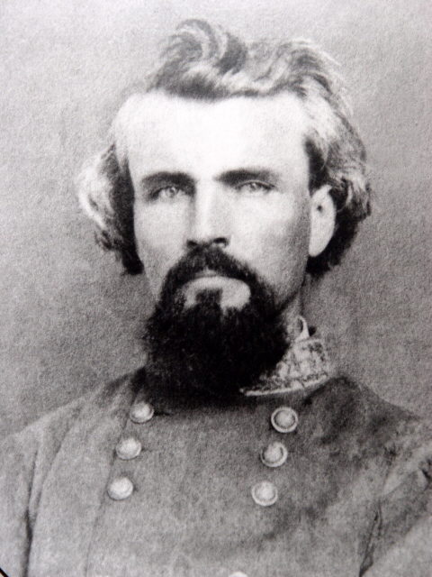
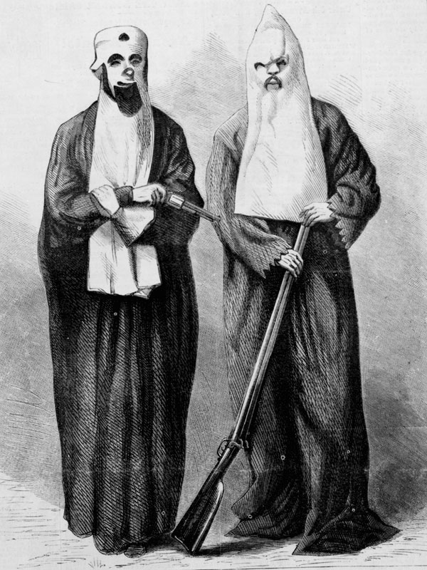

|
A white supremacist terrorist group in the postbellum South,
the Ku Klux Klan began in May and June 1866 in Pulaski,
Tennessee. Soon after its creation, the Klan had chapters
in every Southern state and attracted support from all
segments of Southern white society. Former Confederate
officers, like General Nathan Bedford Forrest, who is widely
|

Nathan Bedford Forrest in the 1870s. His precise
role in organizing the Ku Klux Klan is still debated.
|
believed to have been the organizations first "Grand
Wizard," helped turn the informal social club Klan into a
paramilitary force.
By 1868, the fraternal organization donned white hoods
and dedicated itself to the overthrow of Reconstruction and
the preservation of white supremacy. Like other vigilante
groups in the region (such as the Knights of the White
Camelia and the White Brotherhood), the Klan used violence
to intimidate freedmen and their white supporters. Klansmen
whipped and lynched Southern African Americans for any
conceivable reason. All signs of African-American autonomy
and power became targets for Klan activities. Klansmen
burned schools and churches and lynched ministers, students,
and teachers. Klansmen also attacked black sharecroppers
who disputed their portions of the crop, refused to work for
white employers, tried to change employers, or showed any
signs of economic success.
The Klan directed most of its energy at the political
sphere, especially at black politicians and other supporters
of the South's Republican Party. In many ways, it served as
the military arm of the South's Democratic Party. Klansmen
whipped and often murdered African American officeholders
and local leaders for their political beliefs and actions.
Hundreds of black leaders fled their homes after the
beatings and countless others withdrew from the political
sphere. Prior to the election of 1868, the Klan killed more
than 200 Republican supporters in Arkansas and more than a
thousand in Louisiana. The intimidation intensified on
election day. Armed mobs prevented many polls from opening
while others scared black voters away. In eleven counties
with African American majorities in Georgia, Klan violence
prevented Republican Presidential candidate Ulysses S. Grant
from receiving any votes.
Klan terror continued after the 1868 election provoking
responses from state and federal governments. Several
states made it a crime to travel in disguise, raised the
penalties for mob activities, and even authorized ordinary
citizens to arrest suspected Klansmen. Republican sheriffs
led posses and a few governors sent militia companies to
track Klansmen down. Most Southern governors, however, were
reluctant to act and when they did their efforts enjoyed
little success. Even when they captured Klan members,
conviction in the local courts proved impossible as the
routine killing and intimidation of jurists and witnesses
prevented successful prosecutions. During Reconstruction,
local prosecutors obtained no convictions in the civil
courts.
Prosecutors enjoyed more success in the military courts.
In 1868 and 1869, Arkansas Governor Powell Clayton declared
martial law in ten counties, formed segregated militias,
sent undercover agents to infiltrate the Klan, and tried and
executed Klansmen in military courts. Law and order
returned to the state by the end of 1869 and the state's
Klan was effectively silenced. Texas Governor Edmund J.
Davis proceeded similarly by organizing a two hundred member
state police. This force arrested over 6,000 men and
effectively suppressed the Klan. The effectiveness of
martial law led Klansmen in Tennessee to disband almost
immediately after Governor William G. Brownlow declared
martial law in nine counties.
Attempts in North Carolina to shut down the Klan proved
less successful. In 1879, Governor William W. Holden
responded to a wave of terror and the murder of Senator John
W. Stephens by declaring martial law without the
constitutional authority to do so. Holden sent white
militia units, under the command of former Union officer
George W. Kirk, to patrol the western counties and subdue
|

Two Klansmen in an 1868 Harper's Weekly engraving. Much
of what is associated with the Klan today--in particular, all-white uniforms and
cross burnings--actually dates to the 1910s, when the Klan was
reborn after having been dormant for 40 years.
|
the Klan. Kirk arrested about one hundred men, but Holden
backed down from his desire to try the Klansmen in military
courts. The resulting trials took place in the
Klan-controlled local courts and resulted in no convictions.
The Kirk-Holden War crippled the state's Republican Party
just prior to the legislative election of 1870. Democrats
swept into power, and in 1871 they impeached and convicted
Holden for illegally declaring martial law.
As the death tolls rose, Southern Republicans called on
the federal government for assistance. Congress responded
with a series of Enforcement Acts. The first act, passed in
1870, allowed for the federal supervision of voting and
authorized the President to appoint election supervisors
with the power to bring federal charges for election fraud
and voter intimidation. In January 1871, the violence
initiated by the Klan reached a feverish pitch in South
Carolina when 500 masked men attacked a Union county jail
and lynched eight black prisoners. In April, after several
months of sustained violence, Congress issued the Ku Klux
Klan Act. This law turned several criminal offenses (such
as participating in conspiracies designed to deprive
citizens of their right to vote, hold office, or serve on
juries) into federal crimes, authorized the president to use
the army to enforce this and the earlier Enforcement Act,
and gave him the authority to suspend the writ of habeas
corpus in areas under a state of insurrection. The act
further gave the courts the power to eliminate suspected
Klansmen from juries.
The Enforcement and Ku Klux Klan Acts allowed Attorney
General Amos Akerman and President Ulysses S. Grant to
respond vigorously to the Klan. While Congress held
investigative hearings and recorded the outrages that the
Klan sponsored throughout the region, Grant sent several
cavalry companies to shut the Klan down. Grant suspended
the writ of habeas corpus in nine South Carolina counties.
In these counties, federal troops arrested hundreds of
suspected Klansmen and federal grand juries issued thousands
of indictments. Most of those who were convicted received
fines or light prison sentences, but the arrests effectively
shut South Carolina's Klan down. Grant never extended the
military provisions of the Ku Klux Klan Act outside of South
Carolina, but federal prosecutors also indicted more than a
thousand Klansmen in Mississippi and North Carolina.
The legal offensive of 1871 effectively destroyed the
Reconstruction Era Klan. The Klan disappeared from American
and Southern society for more than forty years before it
revived itself in a national organization in 1915 and again
during the Civil Rights Movement.
Source: Joan Waugh, ed., Facts on File Encyclopedia of American
History: Civil War and Reconstruction, 1856 to 1869 (New York: Facts on
File, 2003), 199-201.
|